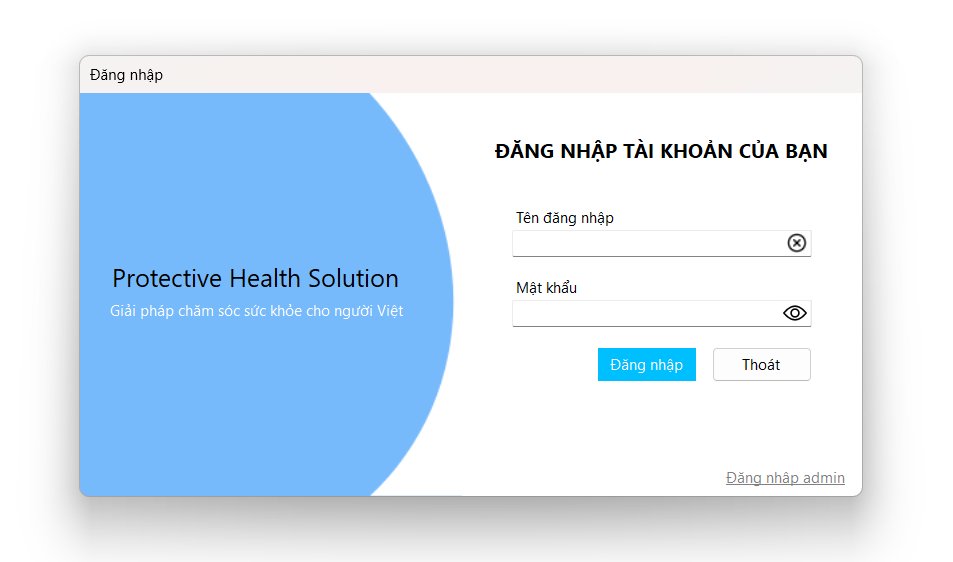

Hướng dẫn sử dụng giao diện Lịch sử thêm toa thuốc.

Hướng dẫn sử dụng giao diện Lịch sử thêm toa thuốc.
Chức năng này dùng để lấy và hiển thị toàn bộ danh sách toa thuốc từ cơ sở dữ liệu lên giao diện DataGridView. Danh sách gồm các thông tin như mã toa thuốc, tên bác sĩ, tên bệnh nhân, chuẩn đoán, ngày lập, ngày tái khám, ghi chú và trạng thái hiện tại.
Chức năng cho phép người dùng nhập từ khóa để tìm kiếm và lọc danh sách toa thuốc dựa trên các tiêu chí như mã toa thuốc, tên bác sĩ, ngày lập, ngày tái khám, trạng thái và tên bệnh nhân nhằm dễ dàng tra cứu và quản lý.
Chức năng mở form tạo toa thuốc mới, cho phép người dùng nhập các thông tin cần thiết và lưu toa thuốc vào hệ thống để quản lý việc kê đơn thuốc cho bệnh nhân.
Chức năng này dùng để tải lại toàn bộ dữ liệu toa thuốc từ cơ sở dữ liệu, cập nhật và đồng bộ danh sách trên giao diện, giúp người dùng có thông tin mới nhất và chính xác nhất.
Chức năng cho phép người dùng xuất toàn bộ danh sách toa thuốc hiện tại ra file Excel với định dạng bảng rõ ràng, dễ dàng lưu trữ, in ấn hoặc chia sẻ dữ liệu bên ngoài hệ thống.
Chức năng cho phép người dùng xem chi tiết nội dung toa thuốc và thông tin thanh toán liên quan bằng cách bấm vào các liên kết trên bảng danh sách, mở ra các form báo cáo tương ứng để kiểm tra và quản lý.